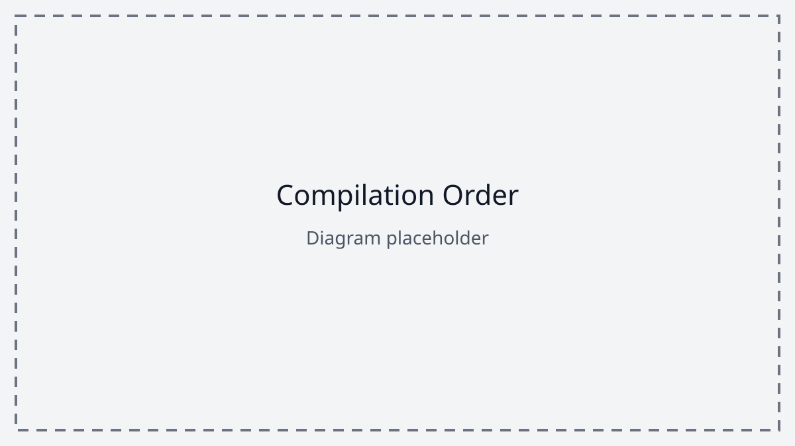

Whole-Building Composition (building-includes)
building-includes is the mandatory project manifest. It selects the topo maps and transports that participate in one compiled building and records the ordered names of its map instances.
It is a composition declaration, not textual inclusion. Source text is not pasted into another source, and a configuration cannot include another configuration.
Syntax
building-includes {
submap Lobby managed-by Public
submap OfficeLevel28 using StandardOfficeFloor managed-by Office
vehicle MainElevator
}The body accepts only submap and vehicle entries. Multiple entries must be separated by line breaks. Line and block comments are permitted.
The supported forms are:
submap MapName
submap MapName managed-by DomainName
submap InstanceName using BaseMapName
submap InstanceName using BaseMapName managed-by DomainName
vehicle TransportNameWhen both clauses are present, using must precede managed-by. Each name must be a TopoScript identifier rather than a filename or path.
Project Sources
A project is composed from the following source categories:
configuration.tcfgorconfiguration- The required
building-includessource. When both names exist,configuration.tcfgtakes precedence. root- An optional extensionless source containing project-global parameters, constraints, types, values, and functions. It is discovered automatically and is not listed in
building-includes. - Topo-map sources
- Sources selected by
submapentries, including base sources required byusing. - Transport sources
- Sources selected by
vehicleentries.
Map and transport sources present in the project but not referenced by the manifest do not participate in compilation. A base map named by using participates even when it has no separate plain submap entry.
Source Resolution
For a plain declaration submap Lobby, the directory compiler first searches for Lobby.tmap and then for the extensionless source Lobby.
For vehicle MainElevator, it first searches for MainElevator.ttr and then for MainElevator.
The in-memory compiler performs the same lookup using exact keys in the supplied filename-to-source map:
configuration.tcfg
root
Lobby.tmap
StandardOfficeFloor.tmap
MainElevator.ttrNames in building-includes cannot contain directories, path separators, extensions, glob patterns, or URLs. All resolved sources therefore belong to one logical project-root namespace.
Direct Submaps
A plain submap entry selects a topo-map source with the same name:
building-includes {
submap Lobby
}Lobby.tmap:
topo-map Lobby() {
let params = {}
topo-node entrance
}For predictable cross-file behavior, the manifest name, source filename, and top-level topo-map name must agree exactly, including case.
Reusable Submap Instances
using constructs a named map instance from a reusable base topo map:
building-includes {
submap OfficeLevel28 using StandardOfficeFloor managed-by Office
}The compiler loads StandardOfficeFloor.tmap or StandardOfficeFloor. It does not search for OfficeLevel28.tmap. The compiled topology is exposed as an instance named OfficeLevel28.
Other sources refer to the instance name:
station F28 at OfficeLevel28::elevator_lobby {
location = 126.0,
departureRate = 0.04
}using is shallow topology reuse. It does not import the base source into lexical scope, extend the base declaration, or recursively resolve another instance alias.
The current compilation result may also retain the loaded base map as an internal graph entry. Applications must treat the declared instance names as the building maps and must not depend on the base template being exposed as a navigable map.
Management-Domain Attachment
managed-by associates a configured management domain with the resulting map or map instance:
submap Lobby managed-by Public
submap OfficeLevel28 using StandardOfficeFloor managed-by OfficeThe second declaration assigns Office to OfficeLevel28; it does not assign that domain to every instance of StandardOfficeFloor. Domain overrides and their routing effects are defined in the building-global declarations and routing-semantics articles.
Composition and Visibility
The configuration determines project membership, while the optional root supplies the global compilation environment. Root declarations are available while every selected topo map and transport is compiled.
A configuration entry does not make declarations from one child source visible to another. Map-local declarations remain local to that map, and transport-local declarations remain local to that transport. Transports connect maps through qualified node names rather than lexical imports.
Compilation Order

- Parse
configuration.tcfgorconfiguration. - Load and elaborate the optional
root. - Load and elaborate directly declared topo maps.
- Load base topo maps required by
using. - Construct the named reusable map instances.
- Resolve effective management domains.
- Load and elaborate transports against the complete map collection.
- Construct the navigation graphs, transport graph, map sequence, and compilation metadata.
A map or transport source may therefore use visible root declarations regardless of where its manifest entry appears. All selected and derived maps are available before transports are linked.
Source Order
The order of submap entries is retained as the compiled graphSequence. Routing code may use this sequence, so authors must list map instances in the intended building order.
The order of entries does not control file discovery: a reusable base or transport-referenced map need not be declared earlier than the entry that uses it. Vehicle order is retained internally by the current compiler but has no specified route-selection meaning.
Cross-File Name Resolution
A transport station resolves its qualified node reference in two stages:
- The map component must identify a compiled direct map or reusable instance.
- The node component must identify a node declared by that map’s topology.
station Lobby at Lobby::main_elevator_landing {
location = 0.0,
departureRate = 0.25
}Identifiers are case-sensitive. Lobby::main_elevator_landing, lobby::main_elevator_landing, and Lobby::Main_Elevator_Landing are distinct names.
The current compiler does not consistently diagnose a mismatch between a manifest name, its filename, and the top-level name declared inside that source. Such mismatches are invalid project authoring and must not be used for aliasing.
Missing References
Current behavior depends on the missing element:
| Condition | Current result |
|---|---|
No configuration.tcfg or configuration |
Compilation fails. |
Invalid building-includes syntax |
Parsing fails with a syntax error. |
| Missing directly declared topo-map source | The compiler reports a warning and omits the map. |
| Missing transport source | The compiler reports a warning and omits the transport. |
Missing base source named by using |
The compiler reports a warning and cannot construct the corresponding instances. |
| Transport references a map that was not constructed | Transport linking fails. |
| Transport references a node absent from its map | Transport linking fails with a missing-node error. |
A successful compiler return does not currently prove that every manifest entry was loaded, because missing map and transport files are warnings rather than fatal diagnostics. Applications that require a complete building must treat these warnings as project validation failures.
Recursive and Cyclic Composition
A building-includes source cannot include another configuration, so configuration recursion is not supported.
using names a physical base topo-map source rather than another alias to resolve recursively. Alias chains, self-reference, and cycles such as the following are unsupported:
building-includes {
submap A using B
submap B using A
}The parser may accept these declarations, but the compiler does not provide recursive alias resolution or a dedicated cycle diagnostic. Authors must use an independent base topo-map source for reusable instances.
Relationship to the Compiled Building
The configuration contributes the direct map graphs, reusable map instances, ordered map sequence, configured management-domain information, and selected transports. The compiler links transport stations to nodes in those maps and produces one transport graph connecting the otherwise independent map graphs.
The optional root contributes shared values used during compilation but does not create a navigable map. Files not selected by the manifest or by a using base reference do not contribute to the result.
Portability and Packaging
A portable TopoScript project should:
- keep all compiler-visible sources in one project-root namespace;
- use exact, case-matching identifiers and filenames;
- prefer
.tcfg,.tmap, and.ttrfor their corresponding source categories; - keep the optional
rootsource extensionless; - package every directly referenced source and every base source named by
using; - avoid relying on filesystem case folding, traversal order, or undeclared files;
- store source text as UTF-8.
The in-memory compiler receives source text directly. The directory compiler currently reads files using the runtime’s default character set rather than enforcing UTF-8, so non-ASCII source portability remains dependent on the host until decoding is standardized.